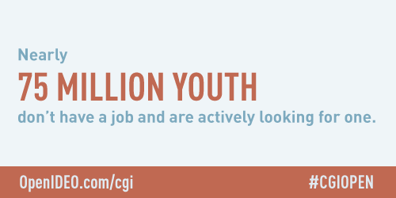
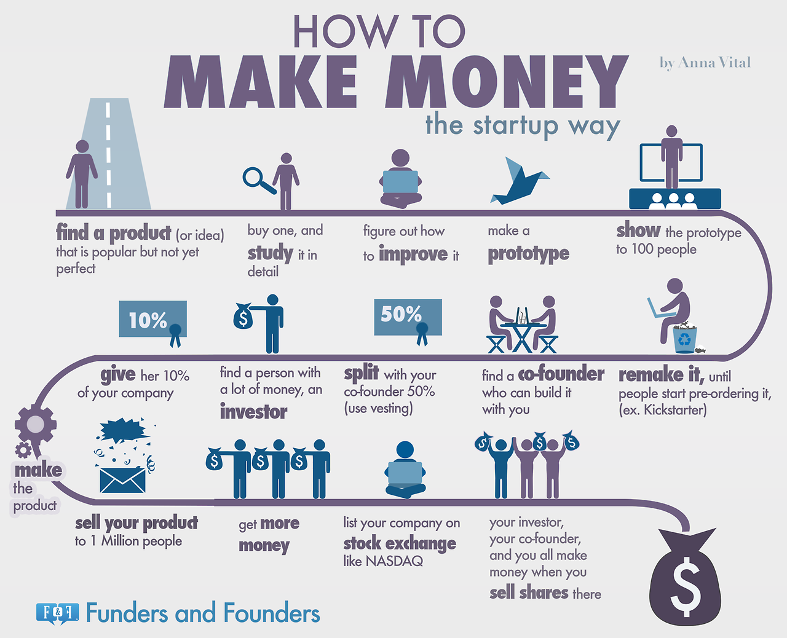
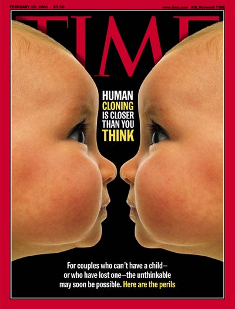

The Quick Look Blog
We read articles for you so you don't have to.
Young Employment from CGI
 Advancing Youth Employment is a Global Issue
Advancing Youth Employment is a Global Issue

Most Important Takeaway
- “With nearly 75 million young people out of school and out of work, addressing youth unemployment is a challenge that reaches every corner of the world.”
Quick Looks
- "In advance of our 10th Annual Meeting, CGI has partnered with OpenIDEO to launch a global challenge on youth employment. Anyone can participate in the challenge, contribute their ideas, and help develop solutions to the question of 'How might we build better employment opportunities and pathways for young people around the world?'"
- "The initiative equips emerging leaders with real-life work experience to better prepare them for continued education and future careers."
- "Some solutions might present entirely new models, while others might focus on scaling proven solutions that have worked in the past."
- Open Campus is entering into this challenge!
Gender's Effect on Entrepreneurship from Forbes
How Are Female Entrepreneurs Different From Male?

Most Important Takeaway
- The gender of the entrepreneur affects how and when their entrepreneurial efforts manifest.
Quick Looks
- Female entrepreneurs tend start their business later in life, while men tend to start their business in their early twenties.
- Women often use their own money to start up their business, while men often rely on loans, or "angel investors."
- "Women are more focused on the greater good. They’ve done studies that show when a female entrepreneur receives a micro-loan more money goes to the family and the community than when it’s a male recipient."
- "One area where women struggle is they appear to display a greater tendency to be self-critical than men when faced with failure."
Young Entrepreneurship from Inc.com
8 Tips for Young Entrepreneurs Planning World Domination

Most Important Takeaway
- "If you have an idea, do it. When you're in your 20s or 30s, that's the time when you can be aggressive and be a risk taker. That's the beauty of youth." Inc.com advises young entreprenuers to embrace the various strengths of being young, and provides other tips on how to make a new business succeed.
Quick Looks
- "Just because you are in school does not mean you should put your dreams on hold. Your college or university is the perfect launch pad for your business."
- "Do what you know and love! It will resonate with your customers, employees, and potential investors. And make all the hard work worthwhile."
Networking from Inc.com
Networking Tips for Introverts

Most Important Takeaway
- Aspiring networkers who are introverts can succeed in making business connections using the tips provided in the article.
Quick Looks
- "Introversion is a trait whereby people recharge and gain energy through 'alone time.'"
- "If you're introverted, you too can boost your personal brand by creating your own comfortable, do-it-yourself networking gatherings."
- "Overall, the idea is to be true to yourself--even in acts of self-promotion. "A good personal brand reflects who you are in the best possible light," they assert. "The process of building your personal brand takes place without losing your integrity or corrupting your core values."
Freelancing from Small Business Labs
Freelancers and the Rise of Multiple Income Sources

Most Important Takeaway
- "A recent Freelancers Union post titled 87% of Freelancers Have Multiple Sources of Income covers the gowing trend of freelancers piecing together multiple sources of income - and even multiple careers - to meet their financial, work and lifestyle goals."
Business Ideas from Inc.com
Is Your Great Business Idea Taken? How to Find Out

Most Important Takeaway
- Do you have a great idea for a new business? Inc.com provides steps to tell if your idea is truly unique
Quick Looks
- Google may be the obvious first step, but it is still essential. Google will not only tell you if your idea has been taken, but it will also show the consumer market
- A Patent and Trademark search will tell you if your idea is in the US Patent and Trademark database. “Some businesses have found it worthwhile to work directly with an attorney who specializes in patents and trademarks”
- “Even when you find that a product or service already exists, you shouldn't assume that you should stay away from that idea altogether. You can use these tools to learn as much as possible about a business's protected concepts and designs, and tweak your product to be much different when you file your own paperwork.”
Bioethics from nytimes.com
The Ethics of Human Cloning

Most Important Takeaway
- "Bioethics was founded by people who understood that the new biology touched and threatened the deepest matters of our humanity." Although the government put a hard stop to the federal funding of cloning research, Kass presents a compelling arguement for both pro human cloning and anti human cloning.
Quick Looks
- "If sex has no intrinsic connection to generating babies, babies need have no necessary connection to sex."
- Cloning eliminates the beauty and the fragility of life: "Enchanted and enslaved by the glamour of technology, we have lost our awe and wonder before the deep mysteries of nature and of life."
- "We are faced with having to decide nothing less than whether human procreation is going to remain human, whether children are going to be made rather than begotten."
Youth Unemployment from Poltico
New grads’ first job: Getting one

Most Important Takeaway
- The struggle for people under 30 to find employment continues to have a presence in our current economy. Politico discusses how students, and graduates are responding to the lack of job opportunities.
Quick Looks
- “We graduated into the worst economy since World War II”
- 8.8% of 18-34 year olds are unemployed, which is 2.6% higher than the national average